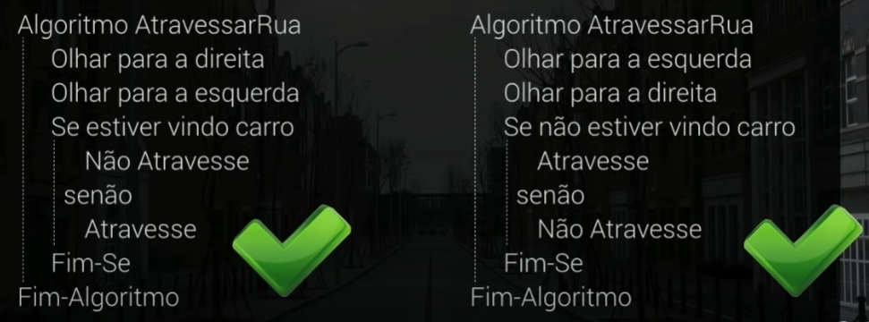
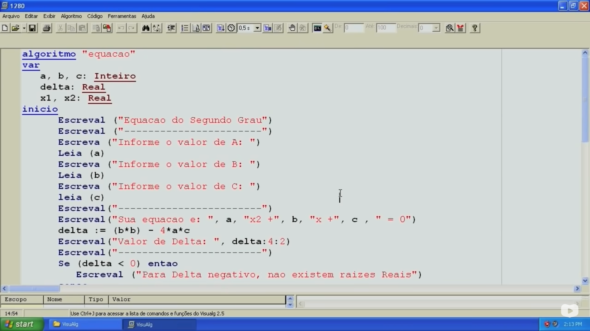
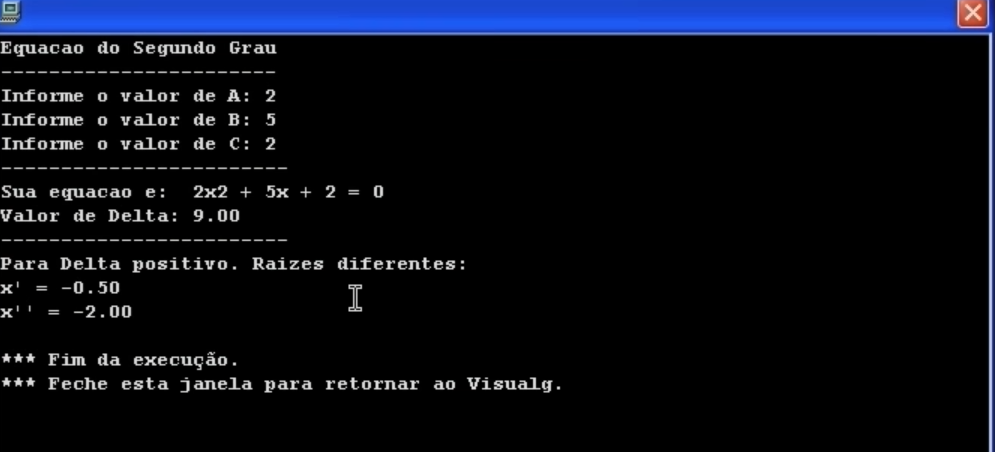

Algoritmos
Algoritmos são um conjunto de passos finitos e organizados que, quando executados, resolvem um determinado problema.
Proporção Áurea
O conceito de Proporção Áurea é muito simples e tudo começa com um numerop representado pela lçetra grega phi, phi é igual a 1,6180339885 (1,618).
Cuidado para não confundir com pi, que vale 3,14.
Se pegarmos um corpo de um ser humano considerado perfeitamente simétrico, o que é compreendido por muitos como sinônimo de beleza, e calculássemos a razão, e a distancia da sua altura até o chão, o valor encontrado entre essa razão vai ser o valor de phi a/b = phi = 1,618.
De maneira similar, a medida do ombro até do dedo e a medida do cotovelo até ao mesmo dedo, também resulta em phi.

Se pegarmos um rosto de uma pessoa considerada bonita, e eu chamaria de simétrica, a proporção áurea estará presentes em várias medidas.
Várias dessas proporçõesestão representadas na obra de homem vitruviano Leonardo Da Vinci. Na natureza o phi também aparece, no girassol por exemplo, suas sementes se distribuem por proporção áurea, a concha do caramujo náutico.
Na arquitetura por exemplo ele é utilizado em várias construções, como o Paternon na Grécia e muitas outras.
Na obra nascimento de vênus de sandro botticelli, Afordite está totalmente representada em proporção áurea.
Beethoven's utilizou a razão phi na sua fifth symphony, e vários músicos utilizam essa razão na divisão rítmica e de compassos.
Hoje a indústria a propaganda e as artes utilizam a proporção áurea
E tudo isso é a reprodução de um padrão, algoritmos.
Toda reprodução de padrões é conhecida como rotina, e esse termo também é utilizados em algoritmos. E podemos aplicar o conceito de Rotina em nossa vida.
Vamos ver por exemplo uma rotina do nosso cotidiano, atravessar a rua. Vamos imaginar aqui um algorítmo hipotético para atravessar a rua. Os passos são lidos de cima para baixo e da esquerda para direita. Veja o exemplo de dois algorítmos diferentes e que funcionam para atravessar a rua.
Ou seja, para não sermos atropelados é uma questão de lógica para organizarmos os passos.
No mundo dos computadores os programas são criados para resolver um problema. Vejamos um problema muito simples.
Equações do Segundo Grau
Observe essa imagem com o algoritmo criado pelo Guanabara para resolver equações de segundo grau, com o programa que vamos utilizar para aprender lógica de programção.
Executando o código pelo visualg temos o valor de A, B e C para ser preenchico para o programa resolver a equação, veja o o resultado após dar enter.
